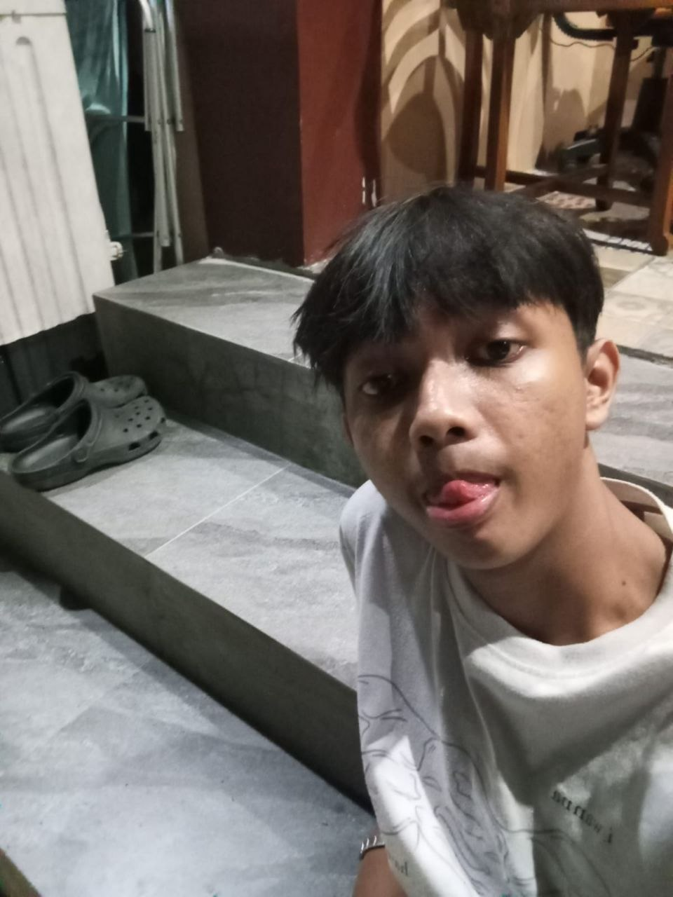
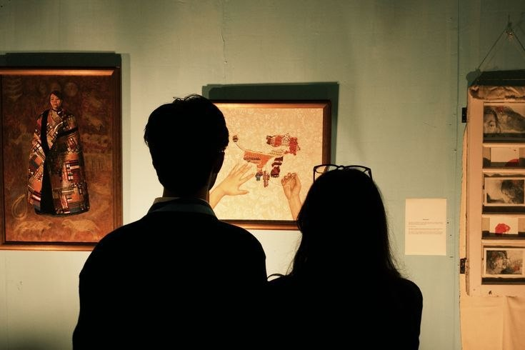
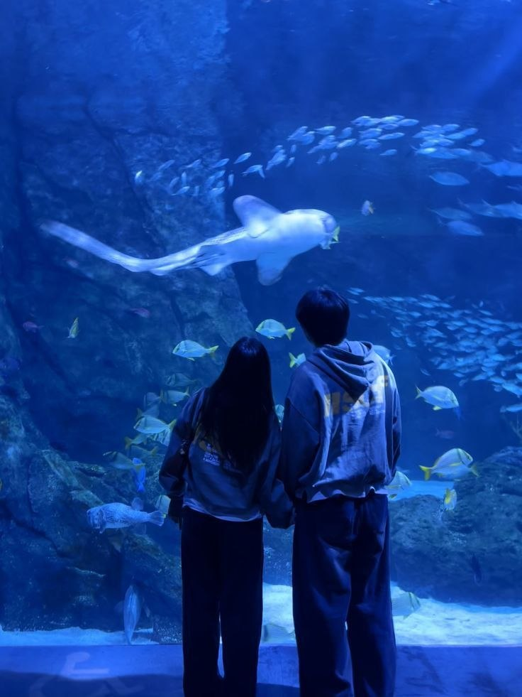
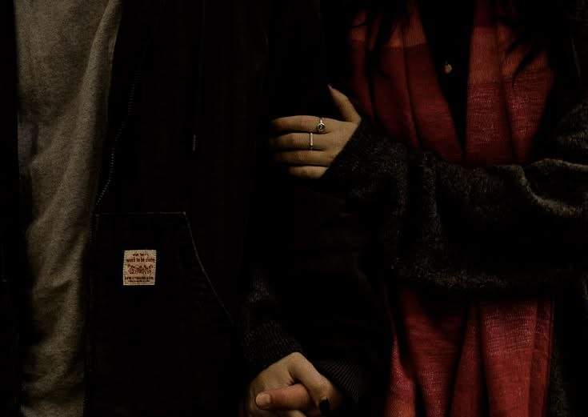
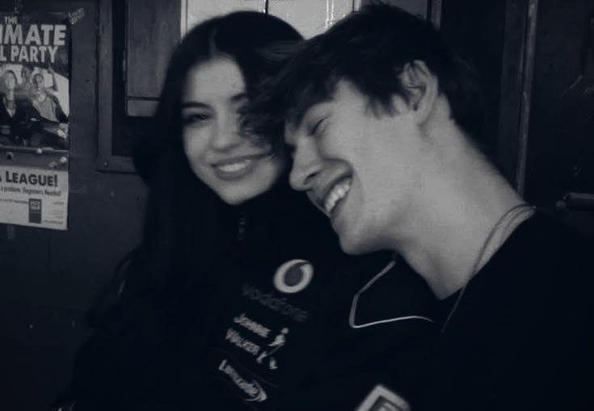
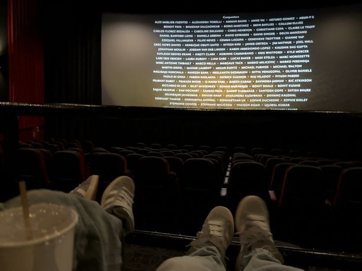
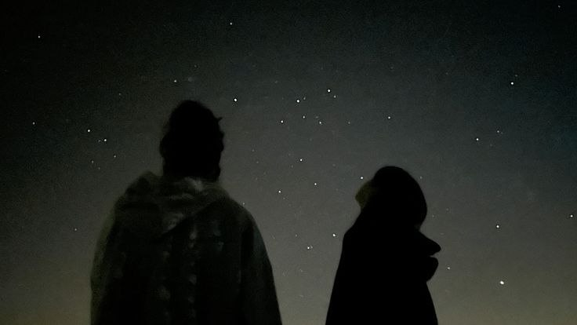

A little scrapbook filled with memories, songs, photos, and words that remind me of you.
some moments are too precious to leave behind.

My DearestIf someone asked me what my favorite memory looks like, I'd probably start with you.
Thank you for being someone who made ordinary days feel a little brighter.

a little memory
one of my favorites
still remember this
you looked happy here
one more memory
under the starshaiiii, selamat malam sayangg. selamat 17 tahun hidup! selamat sudah punya ktp wkwkwkwkwkw selamat udaa ga bocil lagi, ga ah kamu masiii tetep bocil. masii jadi dd dd buat aku, dd yang aku punya, dd yang aku sayang, dd yang bener bener buat aku ngerasa nyaman kalau ada disisi kamu. aku ga akan ngetik banyak disini, karena kamu bakal baca banyak banget pesan pesan aku dannnnnnn minat baca kamu dipertaruhkan disini hehehehehe.
sayang sayang sayang, makasihhhh sudah bertahan selama ini yaaa, makasihhh sudahh menjadi manusia yang lebih baik lagi, makasih sudah sebegitunya buat aku. best part of my life bangetttttt waktu aku ketemu kamu, and best chapter waktu aku baca buku yang ada kamu di dalamnya— ofc aku yang nulis buku itu hehehehe. sayangg ini hanya permulaaan, kamu lanjut baca di bawahnya yaaa, selamat menikmati hadiah dari aku.. love uu dd
— car
Thank you for being one of the most beautiful chapters of my life.
— car